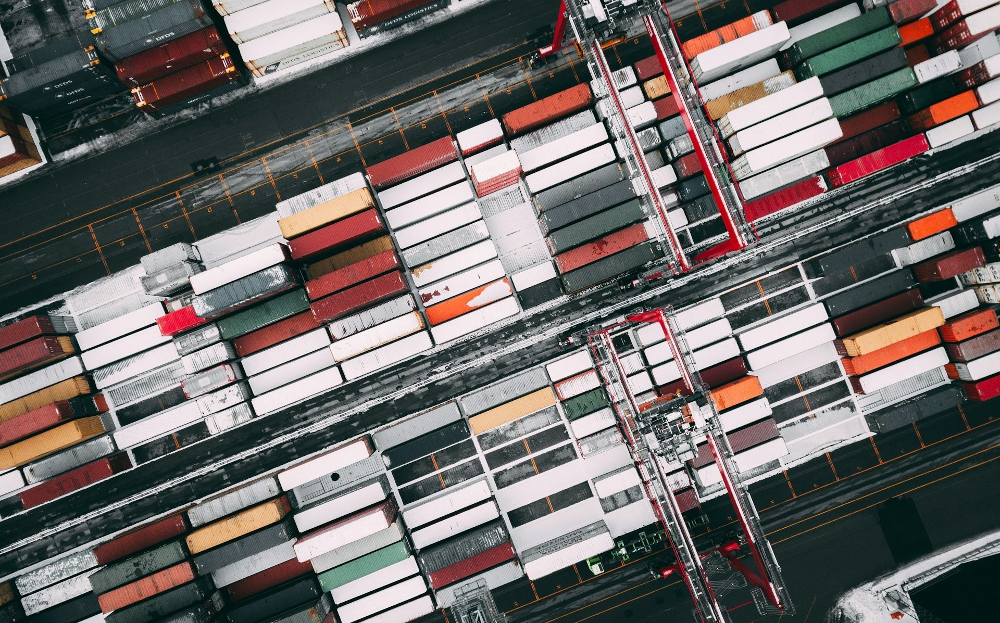

Виконання складських робіт вимагає дотримання певних особливостей
для забезпечення ефективного та безперебійного функціонування
складського простору.
Головні особливості виконання складських
робіт:
1. Організація простору:
-
Раціональне розміщення товарів для максимізації використання
складського простору.
-
Система маркування та ідентифікації для швидкого знаходження
та вилучення товарів.
2. Системи зберігання:
-
Використання раціональних систем зберігання, таких як полички,
стелажі, блоки та інші засоби.
-
Використання технологій автоматизації для оптимізації процесу
зберігання та переміщення товарів
3. Облік і контроль:
-
Впровадження системи обліку товарів (наприклад, системи
штрих-кодів) для точного визначення наявності товарів та
уникнення помилок.
-
Регулярний інвентаризаційний облік для виявлення можливих
втрат чи невідповідностей
4. Оптимізація руху товарів:
-
Використання принципів FIFO (перший прийшов, перший вийшов)
для уникнення застою товарів та зниження ризику застарівання
запасів.
-
Раціональне планування маршрутів переміщення товарів для
мінімізації часу та оптимізації робочих процесів.
5. Безпека:
-
Впровадження системи безпеки для захисту від крадіжок та
недозволених доступів.
-
Навчання персоналу правилам та процедурам безпеки для
запобігання травм та аваріям.
6. Використання технологій:
-
Застосування сучасних технологій управління складом, таких як
системи управління складом (WMS), автоматизовані системи
переміщення товарів, інтеграція з ІТ-системами підприємства.

7. Ефективність і оптимізація ресурсів:
-
Постійна оптимізація робочих процесів та вдосконалення
ефективності роботи складу.
-
Використання аналітики та звітності для прийняття
управлінських рішень щодо оптимізації запасів та робочих
процесів.
8. Екологічні аспекти:
-
Розгляд екологічних аспектів управління складом, таких як
використання екологічно чистих технологій та оптимізація
використання енергії.
Забезпечення відповідності цим особливостям допомагає підприємствам
підтримувати ефективність та конкурентоспроможність своїх складських
операцій.
Done by student of MT-505 group
Dmytro Sukiiasov